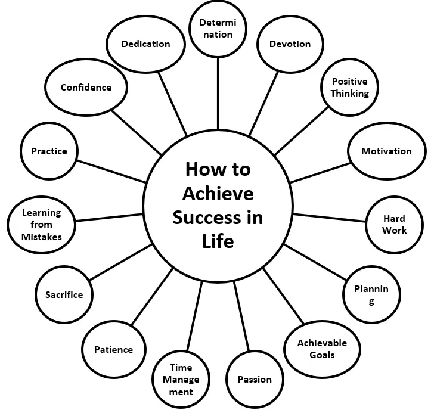

Answer: How to achieve success in life?
Honourable chairperson, respected headmaster, teachers and my dear friends, Today I am going to limit my speech on “How to achieve success in life:” I request you to listen to me carefully. So my friends, success is very important in everyone’s life. Everyone has a dream of becoming a successful human being in life. There is a good saying that, “Success is a journey and not a destination.”
How true it is! If we look at the life of all successful people, we realize the truthfulness of the statement. The definition of success is different for every person. For a child success is to solve a puzzle, for a S.S.C. student, a success is to get good marks, for a businessman, a success is to get a contract and for grandparents, success is to see the whole family together.
Everyone wants to become rich and successful in life. To achieve ambition, there are many steps which are to be followed. First of all, we have to set our goal, means we have to decide what we are and what we want to be. So proper plan and execution of the plan are very important. The tragedy of life does not lie in not reaching the goal, the tragedy lies in having no goal to reach.
For a great success we need a lot of confidence, patience, knowledge, perseverance and hard work. We should not waste our time because time is money. Don’t compare yourself with any other person in the world. Always remember that the word “Impossible” means, I’m possible and if destiny is accompanied with the three D’s: determination, dedication, and devotion then everything becomes possible. We should learn from our own mistakes. We should always follow in the footsteps of great, successful people. Let’s take an example of Dhirubhai Ambani.
He was born in a poor family, but struggled a lot to achieve his ambition and never gave up hope because he knew that there is always a room at the top. He kept the hope alive in his heart and tried his level best and as you know he was one of the richest industrialists in the world. After all, no gains, without pains.
There is a great saying that successful people do not do different things, they do things differently. So work hard, continuously. God’s blessings are always there with you. Thank you for listening to me carefully.
Jai Hind.
Structure of the poem |
Walk a little slower… |
What is Success? |
Does it have rhyming words? Yes No |
Yes |
No |
Does it have a steady rhythm? |
Yes |
No |
Are the lines of equal length? |
Yes |
No |
Are there stanzas with equal number of lines? |
Yes |
No |
Word |
English Meaning |
Hindi Meaning |
Respect |
Deep admiration for someone |
आदर, सम्मान |
Affection |
A gentle feeling of fondness |
स्नेह, प्यार |
Appreciation |
Recognition of good qualities |
सराहना, कद्र |
Critics |
People who judge merit |
आलोचक |
Endure |
To suffer patiently |
सहन करना |
Betrayal |
Being disloyal or treacherous |
विश्वासघात |
Redeemed |
Compensated for faults; improved |
सुधारा हुआ, मुक्त किया हुआ |
Condition |
The state of something |
स्थिति, दशा |